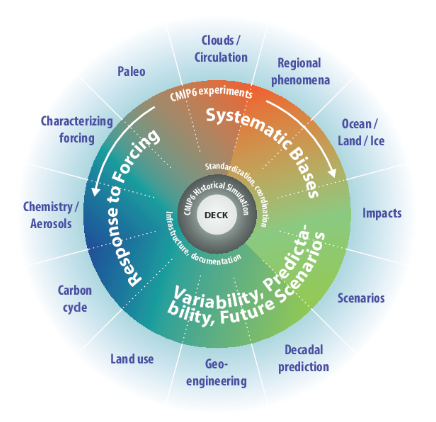

This is the first post in a Quarto blog. Welcome!
Unlocking the Future of Climate Prediction: Machine Learning vs. Traditional Methods
Climate prediction has become a cornerstone of understanding global shifts, forecasting extreme weather, and preparing for the environmental challenges ahead. For decades, scientists have relied on traditional climate models, intricate systems of equations that mimic the complex dance of the atmosphere, oceans, and land. These models have been the backbone of weather forecasts and long-term climate projections. But with the rise of machine learning (ML), a new era of climate prediction is taking shape—one marked by adaptability, scalability, and often, enhanced predictive accuracy.
In this blog post, we’ll dive into the fascinating contrast between time-tested traditional methods and cutting-edge machine learning, exploring their unique strengths, limitations, and transformative applications in the real world.
Traditional Climate Prediction Methods
 Traditional climate prediction methods primarily rely on numerical weather prediction (NWP) models. These models use complex mathematical equations to simulate the physics of the atmosphere, oceans, land, and ice. The models typically divide the Earth’s surface into a grid and calculate how variables like temperature, humidity, and pressure evolve over time. A wide range of global and regional models are used to forecast different aspects of the climate, such as temperature, precipitation, and atmospheric pressure.
Traditional climate prediction methods primarily rely on numerical weather prediction (NWP) models. These models use complex mathematical equations to simulate the physics of the atmosphere, oceans, land, and ice. The models typically divide the Earth’s surface into a grid and calculate how variables like temperature, humidity, and pressure evolve over time. A wide range of global and regional models are used to forecast different aspects of the climate, such as temperature, precipitation, and atmospheric pressure.
Strengths of Traditional Methods
- Scientific Rigor: Traditional methods are grounded in decades of scientific research. The equations used in these models are based on fundamental principles of physics, such as the laws of thermodynamics and fluid dynamics. This makes them highly interpretable and physically consistent.
- Global Coverage: These models can simulate large-scale climate systems across the globe. By modeling the interactions between the atmosphere, oceans, and land, NWP models provide a holistic view of global climate dynamics.
- Well-Established Framework: Over the years, scientists have refined these models, validating them against observational data, which has led to significant improvements in their accuracy. This makes traditional methods reliable in many situations.
Weaknesses of Traditional Methods
- Computationally Expensive: Because these models rely on solving complex mathematical equations, they require enormous computational resources. High-resolution models, which can capture finer details of climate processes, are especially resource-intensive.
- Simplified Assumptions: While these models are grounded in physics, they must simplify some processes due to computational limitations. For example, cloud formation, which plays a crucial role in climate prediction, is often parameterized rather than explicitly modeled. This can lead to inaccuracies, especially in regions where cloud behavior is critical.
- Limited Flexibility: Traditional models typically require extensive recalibration and modifications when dealing with new or unexplored climate conditions. As climate systems are highly dynamic and influenced by a multitude of factors, this can limit their adaptability.
Machine Learning in Climate Prediction
 Machine learning has gained significant traction in climate prediction in recent years. Machine learning algorithms, particularly those based on deep learning, can analyze vast amounts of data to identify patterns and relationships that are difficult for traditional models to capture. Machine learning models do not rely on physical equations but rather on data-driven approaches, learning from historical climate data and making predictions based on those patterns.
Machine learning has gained significant traction in climate prediction in recent years. Machine learning algorithms, particularly those based on deep learning, can analyze vast amounts of data to identify patterns and relationships that are difficult for traditional models to capture. Machine learning models do not rely on physical equations but rather on data-driven approaches, learning from historical climate data and making predictions based on those patterns.
Strengths of Machine Learning Models
- Data-Driven Insights: Machine learning models excel in environments where large datasets are available, such as satellite data, sensor networks, and historical climate data. By recognizing hidden patterns and correlations in these data sets, machine learning can provide new insights into climate processes.
- Flexibility and Scalability: Machine learning models can be easily adapted to new data, and they often require less domain-specific expertise to implement. They can also scale to handle vast amounts of data from different sources, making them ideal for tasks like predicting localized weather events or tracking environmental changes.
- Real-Time Predictions: Machine learning models can process real-time data more efficiently than traditional models. This capability allows for faster predictions, which can be particularly useful for forecasting weather events like hurricanes or heatwaves.
- Improved Accuracy in Some Cases: In some instances, machine learning has outperformed traditional models, particularly in predicting phenomena that are difficult to model directly, such as extreme weather events and local climate patterns. ### Weaknesses of Machine Learning Models
- Lack of Physical Interpretation: Unlike traditional models, which are based on established scientific principles, machine learning models are often “black boxes” that do not provide clear explanations for how predictions are made. This lack of transparency can be a barrier to understanding and validating the predictions.
- Dependence on Quality Data: Machine learning models rely heavily on high-quality, well-labeled data. If the training data is incomplete, biased, or inaccurate, the model’s predictions will also be unreliable. In the context of climate prediction, where data can sometimes be sparse or noisy, this is a significant concern.
- Risk of Overfitting: If not properly tuned, machine learning models can become overfitted to the training data, meaning they perform well on past data but fail to generalize to new, unseen scenarios. This is a challenge in climate modeling, where future conditions may differ from past patterns due to changing environmental factors.
- Limited Generalization: Machine learning models might be exceptional at predicting specific variables or conditions, but they may struggle to generalize across broader, more complex interactions. While deep learning can discover patterns in data, it may not always capture the multi-dimensional and causal relationships that traditional models can simulate.
Real-World Applications and Case Studies
Traditional Methods in Action
 A key example of traditional climate modeling is the Coupled Model Intercomparison Project (CMIP), which involves a set of global climate models that are used to simulate various future climate scenarios. CMIP models have been instrumental in providing projections for future temperature rises, sea-level changes, and regional precipitation patterns, particularly in the context of climate change. These models help inform policymakers, researchers, and governments about potential risks, enabling them to plan for climate mitigation and adaptation. For instance, the CMIP5 models were used in the Intergovernmental Panel on Climate Change (IPCC) Fifth Assessment Report to predict temperature changes under different greenhouse gas emission scenarios. These projections have been vital in guiding international climate agreements, such as the Paris Agreement.
Machine Learning in Action
Machine learning has found applications in areas where traditional models face limitations, such as predicting extreme weather events. One striking example is the use of machine learning in hurricane forecasting. Researchers at institutions like the National Hurricane Center have used deep learning algorithms to analyze historical hurricane data and predict the intensity and trajectory of storms more accurately than traditional models. In addition, machine learning has been used in precipitation prediction. By training on decades of weather data, machine learning algorithms can predict localized rainfall with a high degree of accuracy, which is vital for flood forecasting and agricultural planning. A promising case study comes from Google’s AI for Earth program, where machine learning models have been used to analyze satellite imagery and predict deforestation patterns in real time, aiding conservation efforts. This is an example of how machine learning can complement traditional methods, offering new insights in areas that require both environmental monitoring and predictive analysis.
Machine Learning and Traditional Methods: A Hybrid Approach
 In practice, there is a growing consensus that combining traditional and machine learning-based approaches offers the best of both worlds. For example, hybrid models use traditional physical models to capture known physical processes, while machine learning is used to identify and correct any inaccuracies or missing components. This approach takes advantage of the interpretability and scientific rigor of traditional models, along with the flexibility and pattern-recognition capabilities of machine learning.
In practice, there is a growing consensus that combining traditional and machine learning-based approaches offers the best of both worlds. For example, hybrid models use traditional physical models to capture known physical processes, while machine learning is used to identify and correct any inaccuracies or missing components. This approach takes advantage of the interpretability and scientific rigor of traditional models, along with the flexibility and pattern-recognition capabilities of machine learning.
Conclusion: Which Method Is Better?
Both machine learning and traditional methods have their place in climate prediction. Traditional models are essential for understanding global and long-term climate dynamics, based on proven scientific principles. However, machine learning offers exciting opportunities for enhancing predictions, especially in areas like extreme weather forecasting and real-time climate analysis. Ultimately, the future of climate prediction lies in collaboration. By combining the strengths of both approaches, researchers can build more accurate, efficient, and adaptable models to tackle the growing challenges of climate change. As data science continues to evolve, so too will the tools at our disposal for understanding and predicting our planet’s climate. It’s clear that integrating machine learning with traditional methods will not only improve our predictions but also help us make informed decisions to safeguard our future.